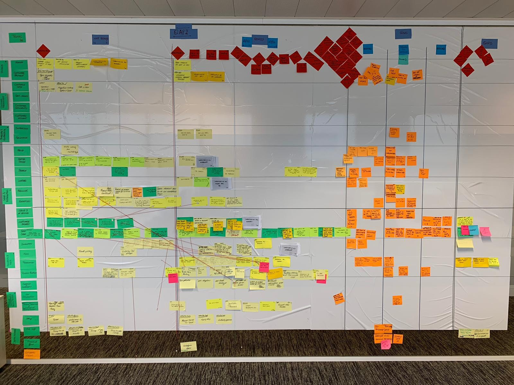
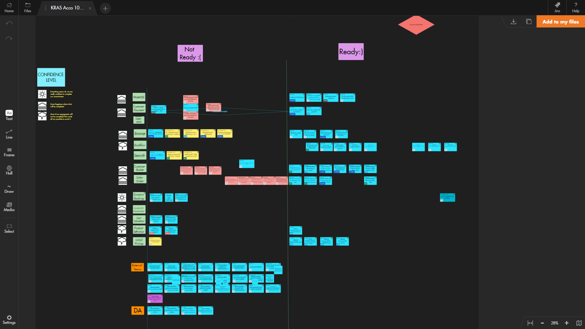
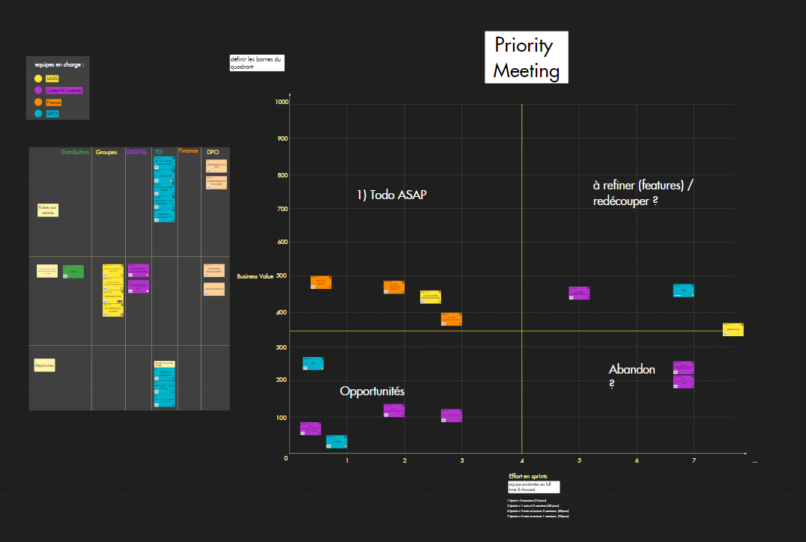

Gérer visuellement un programme
multi-site paneuropéen
-
Julien LANGE Problem Solver, Président
chez WiScale France
Julien LANGE
Problem Solver, Président
chez WiScale France
Avec plus de 70 000 employés répartis dans une centaine de pays, 400 hôtels, et une flotte de 150 avions et 18 navires de croisière, TUI est l’un des plus grands groupes de loisir, voyage et tourisme dans le monde. En 2019, l’entreprise germano-anglaise a servi 21 millions de clients pour un chiffre d’affaires de 19 milliards d’euros.
Au cours de ces 3 dernières années, le groupe a entrepris plusieurs chantiers d’homogénéisation et d’unification de son infrastructure informatique dans le but d’optimiser sa chaîne de valeur de bout en bout. En effet, après une longue période marquée par d’importantes opérations de fusions et acquisitions, l’infrastructure informatique du groupe était devenue un assortiment hétérogène et quasi non-interopérable de sous systèmes d’information. Cette entreprise fut initiée quand il fallut automatiser et assurer la parfaite intégrité de l’échange d’information avec les aéroports et les autres compagnies aériennes.
L’équipe projet en charge de la supervision de ces chantiers était composée de 80 personnes, réparties dans 23 équipes de développement (basées en Belgique, en France, aux Pays-Bas et au Royaume-Uni), chacune menée par un Proxy Product Owner et assistée par un Scrum Master à mi ou tiers temps.
En avril 2018, Julien Lange s’est vu confier l’accompagnement de deux équipes de développement dans le rôle de Scrum Master.
Chaque trimestre, un peu moins d’une centaine de personnes, parmi lesquelles l’équipe projet et certaines autres parties prenantes (business owners, experts, etc.), se réunissaient en Belgique pour un atelier géant s’étalant sur 2 journées entières. L’objectif était de discuter de l’avancement des chantiers en cours, lever les éventuels obstacles, et définir la roadmap des 3 prochains mois. Un mur de 15 mètres de long était alors utilisé pour la construction d’un immense tableau des dépendances qui permettait de coordonner et suivre le travail des différentes équipes.
Au cours des premières itérations du projet, les responsables du programme prenaient des photos du mur de management visuel à la fin de chaque session pour s’assurer de n’oublier aucune information clé. Puis, entre chaque atelier physique, le tableau de post-it était mis à jour sur la base des différents échanges téléphoniques ou email, et puis des photos actualisées du mur étaient renvoyées à toutes les équipes à chaque modification. “C’était juste impossible à gérer”, reconnaît Julien.
Après avoir répété ce processus fastidieux plusieurs fois, Julien proposa d’utiliser Draft pour répliquer l’immense mur de post-it dans le mode digital et faciliter la synchronisation des équipes entre 2 ateliers trimestriels. Ainsi, ils ont réussi à construire un vaste système d'artefacts de management visuel virtuels qui pouvait évoluer aisément au fur et à mesure de l’avancement des différents chantiers.
Ce système à plusieurs niveaux d’abstraction fut imaginé car chaque partie prenante au projet n'avait besoin que de certaines informations bien précises pour suivre le projet efficacement. Par exemple, le responsable du programme n’avait besoin de suivre que la “big picture” de l’avancement, sans se perdre dans les détails. De la même manière, les business owners souhaitaient suivre les projets au niveau des epics. De leurs côtés, les Product Owners devaient, bien sûr, définir et suivre le fonctionnement de l’équipe au niveau de la user story.
Le grand mur de post-it physique fut donc fragmenté en artefacts de management visuel virtuels, plus petits et interconnectés, formant ainsi un système de management visuel à 3 niveaux, au sein duquel chacun disposait du niveau de détail qui lui correspondait.
Par exemple, une epic d’un board peut être détaillée sur un autre board et associée à celui-ci, sans que des informations critiques soient perdues en chemin. En d’autres termes, toutes les user stories et epics qui composent un projet peuvent être associées et diffusées à travers différents boards. “Nous avons construit un système de management visuel multi-niveau, multi-équipe et multisite”, se réjouit Julien.
“Durant toute cette période de confinement, Draft a été d’un énorme secours. Avec son visuel simple et efficace, l'outil a permis au Business et à l’IT de poursuivre sereinement leurs activités collaboratives”, confie Julien.
Par la suite, les Product Owners ont utilisé Draft comme outil de story mapping, en association avec Confluence, pour documenter les besoins et définir les user stories tout en hiérarchisant leur backlog de façon optimale. Julien décrit ainsi le processus mis en place : “après que les parties prenantes aient estimé la business value des epics et que les équipes aient macro-estimé l’effort correspondant pour les implémenter, nous les plaçons dans un quadrant visuel pour identifier spontanément celles qui offrent le ratio Valeur/Effort le plus intéressant. Cette matrice Business Value / Effort est devenue le cœur de notre processus de priorisation du backlog.”
Julien a également utilisé Draft pour faciliter des rétrospectives customisées ou des cérémonies de product backlog refinement. Par exemple, il apprécie organiser des Split Pokers, pour découper les user stories, couplés à des sessions d’Example Mapping : “C’est une façon très efficace d’identifier toutes les questions non élucidées autour d’une user story donnée, puis de partager ces informations avec les business owners concernés”.
Malgré le terrible impact du COVID-19 sur l’industrie du tourisme dans son ensemble, le fait d’avoir accéléré sa transformation digitale depuis quelques années et anticipé le travail à distance a permis au groupe TUI d’assurer sereinement la continuité des opérations pendant la période de confinement.